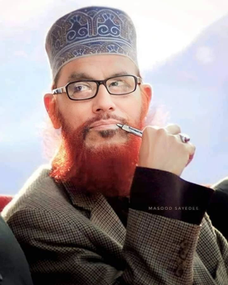

MEMORIAL RECORD · DLA · REFERENCE ARCHIVE
দেলাওয়ার হোসাইন সাঈদী · 2 February 1940 – 14 August 2023
দেলাওয়ার হোসাইন সাঈদী · 2 February 1940 – 14 August 2023 · bilingual memorial record compiled from the English and Bangla Wikipedia articles
| Born / জন্ম | 2 February 1940, Saiyadkhali village, Indurkani, Pirojpur, British India (সাঈদখালি গ্রাম, ইন্দুরকানী, পিরোজপুর) |
|---|---|
| Died / মৃত্যু | 14 August 2023 (aged 83), BSMMU, Dhaka (বিএমিউ, ঢাকা) |
| Resting place / সমাধি | Sayeedi Foundation family graveyard, Pirojpur (সাঈদী ফাউন্ডেশনের পারিবারিক কবরস্থান) |
| Parents / পিতামাতা | Yusuf Shikdar & Gulnahar Begum (ইউসুফ শিকদার, গুলনাহার বেগম) |
| Spouse / স্ত্রী | Sheikh Saleha Begum (শেখ সালেহা বেগম) |
| Children / সন্তান | Rafique (d. 2012), Shameem, Masood, Nasim (রফিক, শামীম, মাসুদ, নাসিম) |
| Offices / পদ | MP, Pirojpur-1 (1996–2006); Nayeb-e-Ameer, Bangladesh Jamaat-e-Islami (2009–2023) |
| Languages / ভাষা | Bengali, Arabic, Urdu (বাংলা, আরবি, উর্দু) |
| Influences / প্রভাব | Hasan al-Banna, Abul A'la Maududi, Allama Iqbal |
Sayeedi received his primary religious education at the village madrasah built by his father. He enrolled at Sarsina Alia Madrasah in 1962 and later moved to Khulna Alia Madrasah. Before entering politics he became one of Bangladesh's best-known orators, drawing huge crowds at waz mahfils across the country; as a mufassir he received praise from Saudi Chief Imam Sheikh Sudais.
তিনি তার বাবার প্রতিষ্ঠিত স্থানীয় মাদ্রাসায় প্রাথমিক ধর্মীয় শিক্ষা অর্জন করেন। ১৯৬২ সালে ছারছিনা আলিয়া মাদ্রাসায় ভর্তি হন ও পরে খুলনা আলিয়া মাদ্রাসায় স্থানান্তরিত হন। রাজনীতিতে প্রবেশের আগে দেশজুড়ে ওয়াজ-মাহফিলে তার বক্তব্যের জন্য ব্যাপক জনপ্রিয়তা অর্জন করেন; মুফাসসির হিসেবে সৌদি প্রধান ইমাম শায়খ সুদাইসের প্রশংসা পান।
During the war his family fled to Jessore around 1 April 1971, staying at a pir's house and later in Mohiron village, Bagharpara. His family states he lived in Jessore's New Market area from 1969 and was not in Pirojpur in 1971; the tribunal heard competing accounts.
১৯৭১ সালের ১ এপ্রিলের দিকে তার পরিবার যশোরে আশ্রয় নেয়। পরিবারের ভাষ্যমতে, ১৯৬৯ সাল থেকে তিনি যশোরের নিউ মার্কেট এলাকায় বসবাস করতেন এবং ১৯৭১ সালে পিরোজপুরে ছিলেন না; ট্রাইব্যুনালে বিপরীত বক্তব্যও শোনা যায়।
He joined Bangladesh Jamaat-e-Islami in 1979, became a Rukon in 1982, a Majlis-e-Shura member in 1989 and an executive-council member in 1996, serving as Nayeb-e-Ameer from 2009 until his death. Elected MP for Pirojpur-1 in the June 1996 and 2001 elections. In 2003 the High Court nullified his 2001 election over expense-rule violations; a Supreme Court stay let him serve out the term.
১৯৭৯ সালে জামায়াতে যোগদেন; ১৯৮২ রুকন, ১৯৮৯ মজলিশে শূরা সদস্য, ১৯৯৬ নির্বাহী পরিষদ সদস্য; ২০০৯ থেকে আমৃত্যু নায়েবে-আমীর। ১৯৯৬ ও ২০০১ সালের নির্বাচনে পিরোজপুর-১ আসন থেকে সংসদ সদস্য নির্বাচিত হন। ২০০৩ সালে হাইকোর্ট ব্যয়-বিধি লঙ্ঘনের ভিত্তিতে তার নির্বাচন বাতিল করলেও সুপ্রিম কোর্টের স্টেতে মেয়াদ শেষ পর্যন্ত দায়িত্ব পালন করেন।
The International Crimes Tribunal charged him with twenty counts of crimes against humanity — murder, rape, arson, looting, forced conversion of Hindus — relating to the 1971 Liberation War; the trial began on 20 November 2011 with 28 prosecution witnesses. Flagship charges included leading the army to Madhya Masimpur bus stand, the killing of Pirojpur officials, looting Parerhat Bazar, burning Hindu homes at Umedpur, and the abduction of three women of Parerhat Bandar.
আন্তর্জাতিক অপরাধ ট্রাইব্যুনাল তার বিরুদ্ধে ১৯৭১ সালের মুক্তিযুদ্ধের সময় হত্যা, ধর্ষণ, অগ্নিসংযোগ, লুটতরাজ ও জোরপূর্বক ধর্মান্তরসহ ২০ দফা মানবতাবিরোধী অভিযোগ গঠন করে; বিচার শুরু হয় ২০ নভেম্বর ২০১১, রাষ্ট্রপক্ষের সাক্ষী ছিলেন ২৮। অভিযোগের মধ্যে ছিল মধ্য মাসিমপুর বাসস্ট্যান্ডে সেনাবাহিনী নিয়ে যাওয়া, পিরোজপুরের কর্মকর্তাদের হত্যা, পাড়েরহাট বাজার লুট, উমেদপুরে হিন্দু বাড়ি পোড়ানো এবং পাড়েরহাট বন্দরের তিন নারী অপহরণ।
On 28 February 2013 ICT-1 found him guilty of eight of twenty charges and sentenced him to death on charges 8 and 10, acquitting him of the other twelve. Verdict-day clashes killed an estimated 100 people nationwide. Amnesty International and Human Rights Watch said the proceedings fell short of international standards and urged a retrial; the defence argued a case of mistaken identity — the real perpetrator being Delwar Hossain Shikdar, executed by Muktijoddha after the war. On 17 September 2014 the Supreme Court Appellate Division commuted the sentence to life imprisonment.
২৮ ফেব্রুয়ারি ২০১৩ আইসিটি-১ বিশ অভিযোগের মধ্যে আটটিতে দোষী সাব্যস্ত করে ৮ ও ১০ নম্বর অভিযোগে ফাঁসির আদেশ দেয়; বাকি বারোটিতে খালাস। রায়ের দিন দেশজুড়ে সংঘর্ষে প্রায় ১০০ জন নিহত হয়। অ্যামনেস্টি ইন্টারন্যাশনাল ও হিউম্যান রাইটস ওয়াচ বিচারটি আন্তর্জাতিক মানে পড়েনি বলে পুনর্বিচারের দাবি জানায়; আসামিপক্ষের যুক্তি ছিল ভুল পরিচয়ের মামলা — প্রকৃত অভিযুক্ত দেলাওয়ার হোসাইন শিকদার, যাকে মুক্তিযোদ্ধারা যুদ্ধশেষে হত্যা করেন। ১৭ সেপ্টেম্বর ২০১৪ সুপ্রিম কোর্টের আপিল বিভাগ ফাঁসির সাজা কমিয়ে আমৃত্যু কারাদণ্ড দেয়।
The tribunal found him guilty of eight charges; the defence's mistaken-identity claim and the international criticism of the process remain part of the historical record. / ট্রাইব্যুনাল আটটি অভিযোগে তাকে দোষী সাব্যস্ত করে; ভুল পরিচয়ের আপত্তি ও আন্তর্জাতিক সমালোচনাও ইতিহাসের অংশ হয়ে থাকবে।
He died of cardiac arrest at BSMMU, Dhaka on 14 August 2023 at 8:40 pm, aged 83. Thousands of mourners joined the janaza; he was buried at the Sayeedi Foundation family graveyard in Pirojpur. His son Masud alleged that the then government was involved in his death through judicial and medical processes.
১৪ আগস্ট ২০২৩ রাত ৮টা ৪০ মিনিটে ঢাকার বিএমিউতে কার্ডিয়াক অ্যারেস্টে ৮৩ বছর বয়সে মৃত্যু হয়। হাজারো মুসল্লি জানাজায় অংশ নেন; পিরোজপুরে সাঈদী ফাউন্ডেশনের পারিবারিক কবরস্থানে সমাহিত হন। তার ছেলে মাসুদ অভিযোগ করেন, তৎকালীন সরকার বিচারিক ও চিকিৎসা প্রক্রিয়ার মাধ্যমে তার মৃত্যুতে জড়িত।
Biography of the Hereafter (আখিরাতের জীবনচিত্র); The Principle of Building a Corruption-Free Society (দুর্নীতি মুক্ত সমাজ গড়ার মূলনীতি); Why I Joined Jamaat-e-Islami (আমি কেন জামায়াতে ইসলামী করি); Islam to Suppress Terrorism and Militancy (সন্ত্রাস ও জঙ্গীবাদ দমনে ইসলাম); Prayers of the Prophet (রাসূলুল্লাহর মোনাজাত); The Miracle of the Holy Qur'an (পবিত্র কোরআনের মুজিজা); Social Life in the Light of Hadith (হাদীসের আলোকে সমাজ জীবন); the Tafsir-e-Sayeedi series (তাফসীরে সাঈদী — আল-ফাতিহা, আমপারা, আল-আসর, লূকমান); Subject-wise Tafsirul Quran (বিষয়ভিত্তিক তাফসীরুল কোরআন, 2 vols); Sayeedi Rachonaboli (আল্লামা সাঈদী রচনাবলী, 3 vols); Seerate Saiyedul Mursaleen (সীরাতে সাইয়্যেদুল মুরসালীন); In the Land of the Blue Sea (নীল দরিয়ার দেশে); Open Letter (খোলা চিঠি); The Ordeal of Faith (ঈমানের অগ্নিপরীক্ষা); The Easy Process of Gaining Paradise (জান্নাত লাভের সহজ আমল) — 40+ titles in Bengali and Arabic.
Portrait: File:Sayeedi.png, English Wikipedia (fair use — memorial/educational). This record quotes or summarizes content from the English and Bangla Wikipedia articles listed below; both carry their own neutrality notices, preserved here by presenting accusations, verdicts, criticisms and family claims side by side.
Memorial record for DLA · print format A4 · neutral encyclopedic summary, not a legal judgment record.
{kind=link}